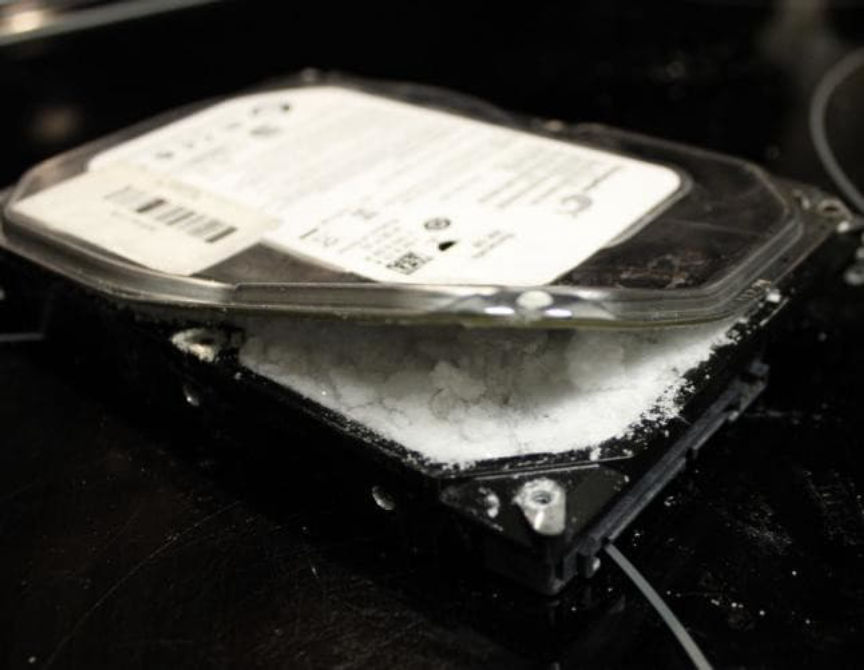
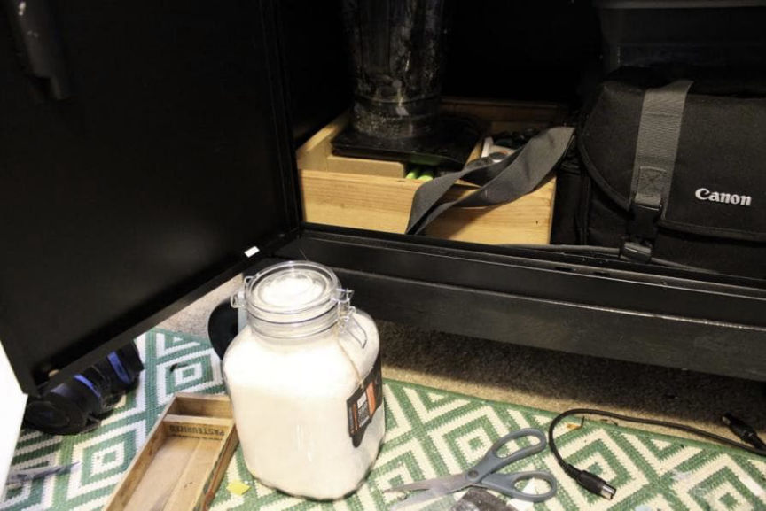
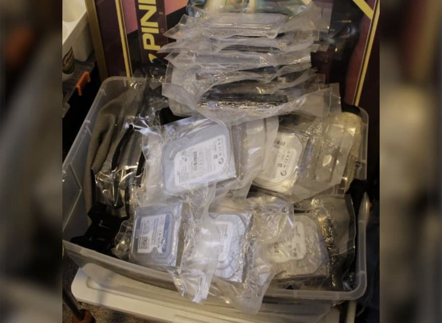
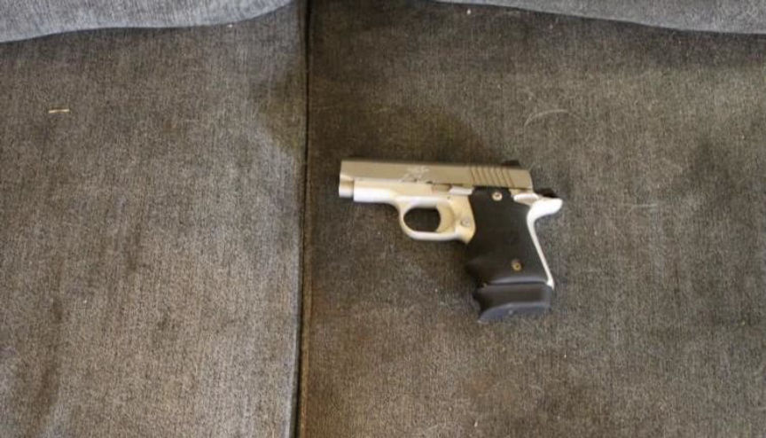
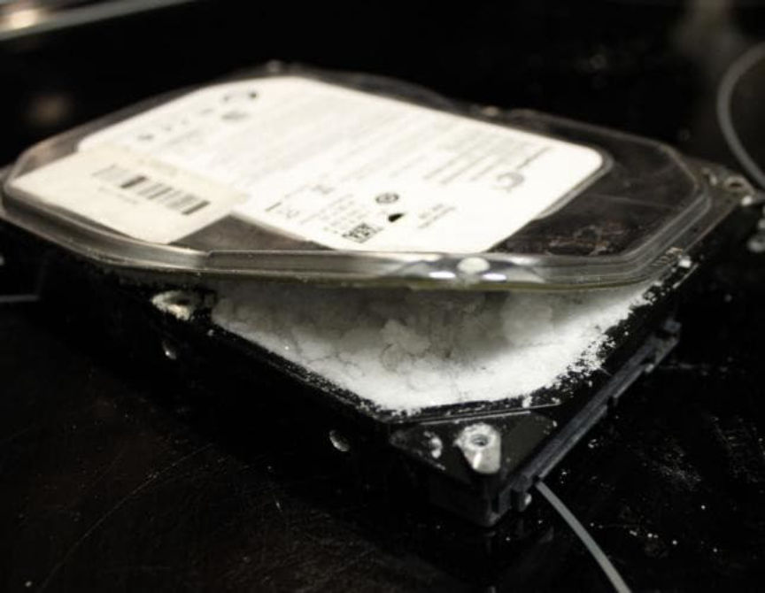
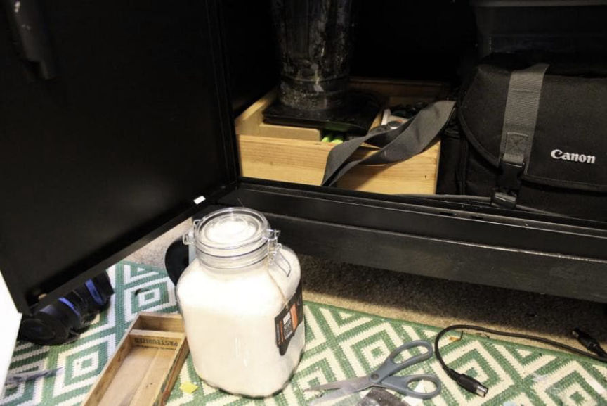
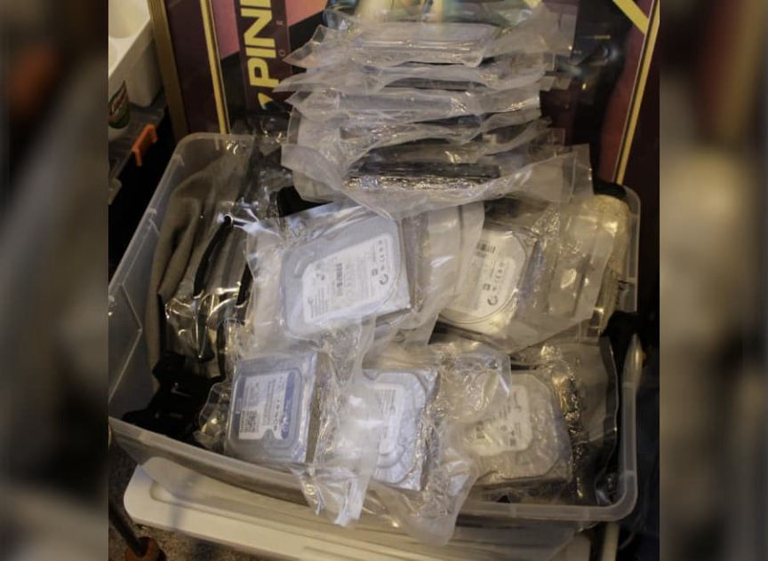
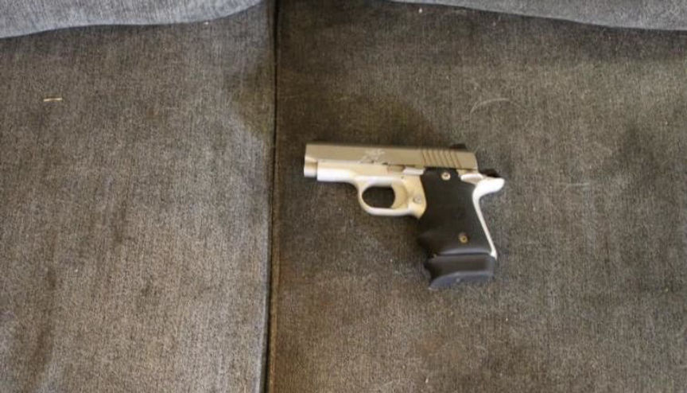

Washington Man Heads to Prison for Selling Meth on the Darkweb
A Washington man who sold methamphetamine on the darkweb was sentenced to five years in prison.
U.S. Attorney Nick Brown announced that Ryan Kane, 34, of Bothell, Washington, had been sentenced to five years in prison. Kane had pleaded guilty to one count of Possession of Methamphetamine with Intent to Distribute in March 2022.
The investigation that resulted in Kane’s arrest began in March 2021 after the Australian Border Force (ABF) had seized 39 computer hard drives containing crystal methamphetamine from a UPS package. The “seizure weight” was fou kilograms.
On April 25, 2021, a United States Postal Service (USPS) outbound mail parcel arrived at the SFO International Mail Facility destined for Australia. The package was declared a “3.5IN DESKTOP HARDDRIVE,” and a Customs and Border Protention officer referred the package for inspection. Officers x-rayed the package, which revealed inconsistencies between the description and the image, according to the criminal complaint.

“In the image, the inside of the hard drives appeared granular, as if they were full of thousands of small particles. This is in stark contrast to a smooth solid piece of metal or plastic seen from a legitimate hard drive. A physical examination of USPS Package 1 revealed 18 vacuum sealed hard drives. Furthermore, CBPO Salas opened a hard drive and observed a crystalline substance inside. CBPO Coleman tested the suspected substance inside the hard drive and it field-tested positive for methamphetamine. CBPO Salas calculated the gross weight of the hard drives with the methamphetamine to be 8,096 grams.”
On April 27, 2021, a similar USPS package arrived at the San Francisco International Mail Facility destined for Australia. The package was declared as a “3.5IN DESKTOP HARDDRIVE.” Customs officers refereed the package for inspection. Officers x-rayed the package, noted the same inconsistencies in the first package, and then opened the package.
“The wrapping and feel of the hard drives were inconsistent with what’s expected of a new drive. Furthermore, CBPO Salas opened a hard drive and a crystalline substance was found inside. CBPO Salas conducted a field test on the substance contained inside the hard drive and determined that the substance was methamphetamine. CBPO Salas determined that the total gross weight of the meth and hard drives was 8,173 grams.”
USPS business records revealed that someone using the I.P. address 50.106.18.109 had tracked the first USPS package eight times and the second USPS package three times. The I.P. address was assigned to Ziply Fiber, an Internet Service Provider. Records from Ziply Fiber identify the subscriber for the I.P. address as Ryan Kane at 12618 NE 180th S.T., Apt EE302 Bothell, WA 98011.
On June 7, 2021, agents executed a search warrant at Kane’s apartment, vehicle, and person. Agents found 1,844.1 grams of methamphetamine inside a jar in Kane’s bedroom.

In the same room as the methamphetamine, agents found 15 hollowed-out hard drives containing more methamphetamine.
<picture><source srcset="https://darknetlive.com/post/washington-man-sentenced-to-prison-for-selling-meth/avif/harddrives.avif" type="image/avif"><source srcset="https://darknetlive.com/post/washington-man-sentenced-to-prison-for-selling-meth/webp/harddrives.webp" type="image/webp"></picture>
Agents also found a notebook containing the username of Kane’s darkweb vendor account, artwork related to the same vendor account, USPS Priority Mail Express Boxes, FedEx Boxes, multiple shipping labels, and a 9mm pistol.
Kane told agents that he knew about the methamphetamine in his apartment and admitted that he had been selling it. However, Kane also told agents that an outlaw motorcycle gang had extorted him into selling the methamphetamine. “The Defendant refused to provide any names of individuals who had threatened him or supplied the methamphetamine,” Special Agent Matt Eidinger wrote in the criminal complaint.

Court documents do not disclose the username of Kane’s vendor account. They do identify Wallstreet Market as one of the marketplaces Kane had used.
“Specifically, on October 17, 2019, Mr. Kane received an order for five grams of methamphetamine from the Dark Web marketplace Wall Street. Mr. Kane processed and packaged the methamphetamine and shipped the package. The parcel contained approximately five grams of a mixture or substance containing a detectable amount of methamphetamine.”
The total gross weight of the methamphetamine was 8,280.4 grams.
U.S. District Judge James L. Robart said at the sentencing hearing, addressing Kane, “This isn’t about you…. This is about what you did to the community …sending drugs not just into our community, but the world. What you did is decidedly wrong.”
“Mr. Kane’s conviction and today’s sentence demonstrates how smugglers cannot hide behind the perceived veil of secrecy associated with Dark Web marketplaces,” said Special Agent in Charge (SAC) Robert Hammer, who oversees Homeland Security Investigations (HSI) operations in the Pacific Northwest. “HSI through its transnational law enforcement footprint will doggedly pursue these cases with our law enforcement partners within the U.S. and abroad.”
Bothell, Washington, man sentenced to 5 years in prison for dealing drugs hidden in computer hard drives | archive.is, archive.org, justice.gov
Indictment pdf
U.S. Attorney Nick Brown announced that Ryan Kane, 34, of Bothell, Washington, had been sentenced to five years in prison. Kane had pleaded guilty to one count of Possession of Methamphetamine with Intent to Distribute in March 2022.
The investigation that resulted in Kane’s arrest began in March 2021 after the Australian Border Force (ABF) had seized 39 computer hard drives containing crystal methamphetamine from a UPS package. The “seizure weight” was fou kilograms.
On April 25, 2021, a United States Postal Service (USPS) outbound mail parcel arrived at the SFO International Mail Facility destined for Australia. The package was declared a “3.5IN DESKTOP HARDDRIVE,” and a Customs and Border Protention officer referred the package for inspection. Officers x-rayed the package, which revealed inconsistencies between the description and the image, according to the criminal complaint.

Kane shipped methamphetamine to customers inside hard drives.
“In the image, the inside of the hard drives appeared granular, as if they were full of thousands of small particles. This is in stark contrast to a smooth solid piece of metal or plastic seen from a legitimate hard drive. A physical examination of USPS Package 1 revealed 18 vacuum sealed hard drives. Furthermore, CBPO Salas opened a hard drive and observed a crystalline substance inside. CBPO Coleman tested the suspected substance inside the hard drive and it field-tested positive for methamphetamine. CBPO Salas calculated the gross weight of the hard drives with the methamphetamine to be 8,096 grams.”
On April 27, 2021, a similar USPS package arrived at the San Francisco International Mail Facility destined for Australia. The package was declared as a “3.5IN DESKTOP HARDDRIVE.” Customs officers refereed the package for inspection. Officers x-rayed the package, noted the same inconsistencies in the first package, and then opened the package.
“The wrapping and feel of the hard drives were inconsistent with what’s expected of a new drive. Furthermore, CBPO Salas opened a hard drive and a crystalline substance was found inside. CBPO Salas conducted a field test on the substance contained inside the hard drive and determined that the substance was methamphetamine. CBPO Salas determined that the total gross weight of the meth and hard drives was 8,173 grams.”
USPS business records revealed that someone using the I.P. address 50.106.18.109 had tracked the first USPS package eight times and the second USPS package three times. The I.P. address was assigned to Ziply Fiber, an Internet Service Provider. Records from Ziply Fiber identify the subscriber for the I.P. address as Ryan Kane at 12618 NE 180th S.T., Apt EE302 Bothell, WA 98011.
On June 7, 2021, agents executed a search warrant at Kane’s apartment, vehicle, and person. Agents found 1,844.1 grams of methamphetamine inside a jar in Kane’s bedroom.

Agents found 1,844.1 grams of methamphetamine inside a jar in Kane's room.
In the same room as the methamphetamine, agents found 15 hollowed-out hard drives containing more methamphetamine.
<picture><source srcset="https://darknetlive.com/post/washington-man-sentenced-to-prison-for-selling-meth/avif/harddrives.avif" type="image/avif"><source srcset="https://darknetlive.com/post/washington-man-sentenced-to-prison-for-selling-meth/webp/harddrives.webp" type="image/webp"></picture>
Kane had a stack of hard drives containing methamphetamine.
Agents also found a notebook containing the username of Kane’s darkweb vendor account, artwork related to the same vendor account, USPS Priority Mail Express Boxes, FedEx Boxes, multiple shipping labels, and a 9mm pistol.
Kane told agents that he knew about the methamphetamine in his apartment and admitted that he had been selling it. However, Kane also told agents that an outlaw motorcycle gang had extorted him into selling the methamphetamine. “The Defendant refused to provide any names of individuals who had threatened him or supplied the methamphetamine,” Special Agent Matt Eidinger wrote in the criminal complaint.

Court documents do not disclose the username of Kane’s vendor account. They do identify Wallstreet Market as one of the marketplaces Kane had used.
“Specifically, on October 17, 2019, Mr. Kane received an order for five grams of methamphetamine from the Dark Web marketplace Wall Street. Mr. Kane processed and packaged the methamphetamine and shipped the package. The parcel contained approximately five grams of a mixture or substance containing a detectable amount of methamphetamine.”
The total gross weight of the methamphetamine was 8,280.4 grams.
U.S. District Judge James L. Robart said at the sentencing hearing, addressing Kane, “This isn’t about you…. This is about what you did to the community …sending drugs not just into our community, but the world. What you did is decidedly wrong.”
“Mr. Kane’s conviction and today’s sentence demonstrates how smugglers cannot hide behind the perceived veil of secrecy associated with Dark Web marketplaces,” said Special Agent in Charge (SAC) Robert Hammer, who oversees Homeland Security Investigations (HSI) operations in the Pacific Northwest. “HSI through its transnational law enforcement footprint will doggedly pursue these cases with our law enforcement partners within the U.S. and abroad.”
Bothell, Washington, man sentenced to 5 years in prison for dealing drugs hidden in computer hard drives | archive.is, archive.org, justice.gov
Indictment pdf